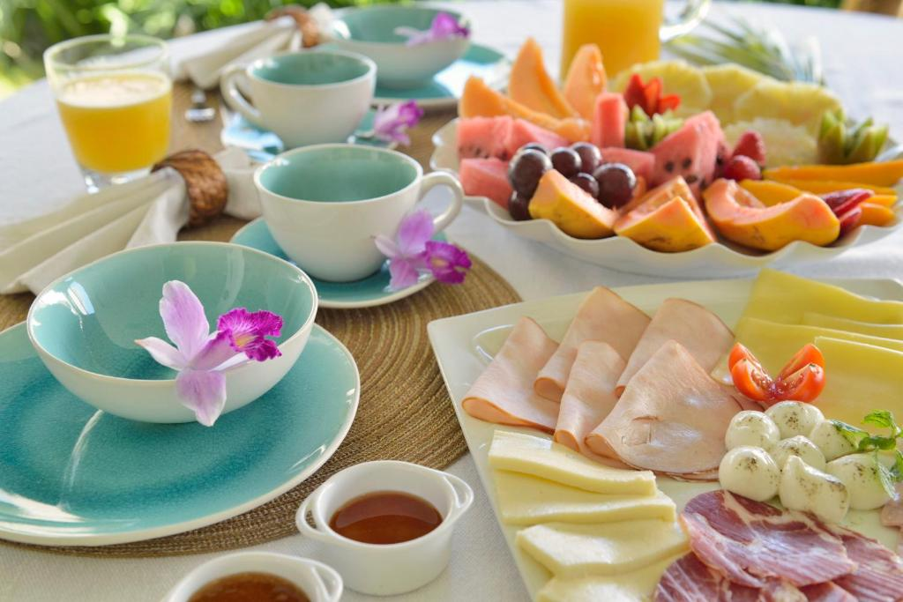

"Voltei pelo cuscuz"
Eu vinha pela praia, mas voltei pelo cuscuz com manteiga da terra.
Carlos, Natal (RN)

Refúgio Ponta do Seixas
Pousada no extremo oriental das Américas, em João Pessoa (PB)

Tudo o que servimos vem de produtores da região. O cardápio muda um pouco a cada dia, mas a tapioca feita na hora nunca sai da mesa.
Clique em cada categoria para ver o que servimos.
Eu vinha pela praia, mas voltei pelo cuscuz com manteiga da terra.
Carlos, Natal (RN)